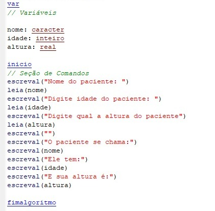

Totorial sobre logica de programação
introdução a descrição narrativa:
A logica de programação é a base para se entender como funciona a programação e introduzir a sua logica de desenvolvimento para iniciantes, ela tem suas três etapas principais, a descrição narrativa, floxograma e o pseudocodigo,
A descrição narrativa apresenta o funcionamento de um algoritmo em forma de texto descritivo, explicando suas etapas de maneira clara e lógica, como uma história. Essa abordagem torna conceitos técnicos mais acessíveis, ajudando tanto desenvolvedores quanto não desenvolvedores a entenderem a lógica do algoritmo. EX:

introdução a floxograma:
É uma organização na qual o funcionamenteo do código é ordenado em etapas com início, processamento e fim organizado em forma de fluxograma. EX:

introdução a pseudocodigo:
No pseudocodigo se faz um código com organização básica dividida em início, a criação de variáveis, o processamento e fim. Os codigo funcionam de forma simples em português. EX:
